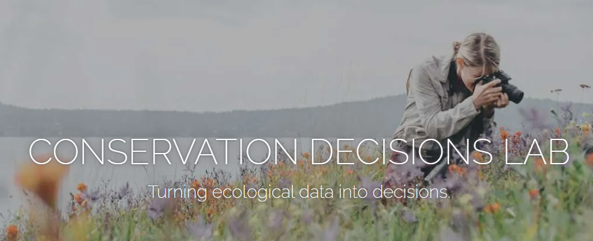

CDL Media & Socials
Website
The CDL website is one of the lab’s primary public-facing platforms. The website contains information pertaining to research focal areas, publications, teaching, and team members. At the moment, Tara is overseeing updates to the website. If not prompted, please reach out to Tara or Madeline to ensure you have an up-to-date photo and bio on the website. In addition, if you have a new publication or your work has been featured in the media, please share this with Tara so she can put it on the website and Instagram

The CDL Instagram is currently run by Tara and is used as a more frequently updated public-facing platform. Lab members are encouraged to share any photos or videos of their work with Tara, with a caption for context, to be shared on the lab Instagram (or upload to the 01_CDL Social Media folder in Dropbox and notify Madeline). Riley has also been creating reels so connect with him if you have video footage of your work!
Logo
Our beautiful CDL logo was created for us by Coast Salish artist, Sarah Jim. Please see the 02_Lab_Logo folder in the CDL Dropbox to access logo PNGs. There are many versions of the logo, varying in colour, detail, and text. Text was added by Emily Clark, PhD student and resident scientific illustrator. Lab members are encouraged to use our lab logo on research outputs (e.g., posters, presentations, reports, etc.) and select the version that best suits the output type. Please reference the logo contract for permissable uses.

Lab Media
The CDL Photo & Media Archive is hosted in Dropbox. Due to its large file size, the media archive is currently hosted as an independent folder which lab members can choose to add locally to their Dropbox—or not—depending on their Dropbox storage space. For those who do not want to add this folder to their own Dropbox, the media folder can be accessed by clicking on the web shortcut in the 11_Media Folder in the CDL Dropbox.
Media Guidelines
Terms of Use for Media Partners
The following terms of use apply to all images, media, and content shared with the Conservation Decisions Lab, as agreed upon with the photographers or media partners. Each project partner must review and approve the terms of use that best fit their needs before sharing any content.
The following options are based on Creative Commons licensing, each has varying levels of permissions and protections.
General Guidelines for Lab & Media Partners: A Checklist
● Attribution:
Always ensure proper credit is given to the photographer or media partner as specified in the agreed-upon terms of use. The exact wording of the credit should be agreed upon beforehand (e.g., photographer’s name, project name, or other relevant identifiers). When publishing or distributing the media, ensure the attribution is clearly legible—whether in print, online, or in presentations.
● Respecting Licensing:
The Lab should always include a copy of the agreed-upon license when sharing media with external partners, collaborators, or media outlets to ensure the terms are respected. This minimizes any confusion or misuse of the media and ensures that all parties are aware of the legal boundaries for usage. For example, if an image is licensed for non- commercial use only (i.e to promote research) that condition must be communicated clearly to any third party.
● Consent for Additional Use:
For any use of the media outside the scope of the original agreement (particularly commercial uses, such as being sold to a third-party media outlet), explicit written consent must be obtained from the photographer or media partner. This includes reselling the work, licensing it for new purposes, or sharing it with organizations not initially covered in the agreement. Always ensure that photographers are fully aware and compensated (if applicable) for any commercial uses.
Types of Licensing Agreements
1. Attribution (CC BY 4.0)
This license allows for the broadest use of media, permitting others to distribute, remix, adapt, and build upon the work, even commercially, as long as appropriate credit is given to the original photographer.
- Terms:
- You must credit the original photographer as specified by them.
- You may not imply that the photographer endorses your use.
- Media may be used for both Lab-related and non-Lab-related stories, provided the above conditions are met.
2. Attribution-NonCommercial (CC BY-NC 4.0)
This license permits others to remix, adapt, and build upon the work, but only for non- commercial purposes. Any derivative works must also acknowledge the original photographer.
- Terms:
- Media may only be used for non-commercial purposes (i.e., no resale or monetization).
- You must credit the original photographer in any public or digital use.
- Any alterations to the work must also provide credit to the original creator.
- Media shared by the Lab may not be used in third-party commercial media outlets without additional consent.
3. Attribution-NonCommercial-NoDerivatives (CC BY-NC-ND 4.0)
This license allows others to download and share the work as-is, but they cannot make any changes or use it commercially.
- Terms:
- Media must remain unchanged and cannot be adapted or altered.
- Use is restricted to non-commercial purposes only.
- Proper attribution is required when the media is shared or published.
- The Lab may distribute the media for educational or Lab-related content only. Any third-party use must receive explicit consent from the photographer.
4. Custom Commercial Agreement
For media used in commercial outlets (such as major news organizations or publications), the Lab may negotiate specific terms with the photographer that go beyond standard Creative Commons licenses.
- Terms:
- Any media shared for commercial use must receive the photographer’s written
- consent and terms.
- A fee may be required for commercial use or resale of the work.
- Proper credit must be provided, and the terms of the commercial agreement should be adhered to strictly.
5. Lab-Specific Use Only (Custom License)
In this scenario, the photographer grants the Lab the right to use their media exclusively for internal and educational purposes or in Lab-related content. This is not a Creative Commons license but a tailored agreement.
- Terms:
- Media can only be used for Lab-related publications, presentations, and projects.
- Media cannot be shared with external media outlets or used commercially.
- The photographer retains full copyright and control over the distribution of their work beyond the Lab.
Social Media
When sharing images or media on platforms like Instagram, TikTok, or similar outlets, it’s important to acknowledge the unique challenges of crediting and maintaining control over the distribution of content. Given the ease of reposting or resharing on these platforms, the following guidelines can help ensure that proper credit is consistently maintained.
1. Embedding Credits in the Image:
One of the most effective ways to ensure credit is retained when content is reshared is by embedding the photographer’s or creator’s name directly into the image or video. This can be done subtly but visibly—such as in a corner of the photo or within the frame of a video. The credit should be legible without distracting from the image itself.
2. Including Credits in Captions:
When posting on Instagram, TikTok, or other platforms, always include the proper credits in the caption. Tag the photographer or creator’s social media handle (if applicable) and add a clear mention of their contribution.
3. Respecting Platform Limitations:
Some social media platforms (like Instagram Stories) have shorter lifespans for posts, making embedded or visible credits essential. Whenever you are posting temporary media (e.g., Stories or Reels), ensure the photographer or creator is credited in the overlay text or in any supplementary captioning that appears with the media.
4. Permissions for Social Media Use:
If the photographer or creator has not explicitly agreed to social media distribution, make sure you get their permission before posting. Social media may be considered a separate usage category, especially if there is potential for commercial gain through resharing or promotion.